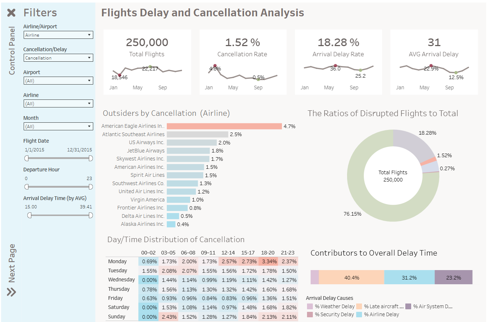

Tableau · Data Visualization
Flight Delay and Cancellation Analysis
An interactive Tableau dashboard analyzing flight performance across airlines and airports, with a focus on delays, cancellations, operational patterns, and potential areas for improvement.
Project overview
The purpose of this project was to evaluate completed flights across different airlines and airports and to identify the main causes and patterns behind delays and cancellations.
The analysis compares airline and airport performance, identifies underperforming locations and carriers, and presents practical recommendations based on the discovered patterns.
Business questions
- Which airlines have the highest number and rate of delayed or cancelled flights?
- Which airports experience the most operational problems?
- What are the most frequent causes of flight delays?
- How do delay patterns change by time, location, and airline?
- Which operational improvements could reduce delays and cancellations?
Project workflow
- Reviewed and prepared the available flight, airline, and airport datasets.
- Created relationships between tables using airline and airport codes.
- Developed calculated fields and key performance indicators in Tableau.
- Compared delay and cancellation performance across airlines and airports.
- Investigated the main causes and timing patterns of flight disruptions.
- Designed an interactive dashboard with filters and logically grouped analytical sections.
Dashboard overview
The main dashboard provides an overview of flight performance, including delayed and cancelled flights, airline comparisons, airport performance, and the main causes of delays.

Key findings
- Certain airlines and airports showed consistently higher delay and cancellation levels.
- Late aircraft arrival was an important contributor to delays in several locations.
- Flight disruption patterns varied depending on the airport, airline, and time period.
- Comparing both absolute numbers and delay rates was necessary because larger airlines naturally operate more flights.
Recommendations
- Allow additional turnaround time at airports where late aircraft arrival is a frequent cause of delay.
- Review schedules and staffing during periods with consistently high disruption levels.
- Investigate underperforming routes, airports, and airlines separately rather than relying only on overall averages.
- Monitor both the number and percentage of delayed flights when evaluating performance.